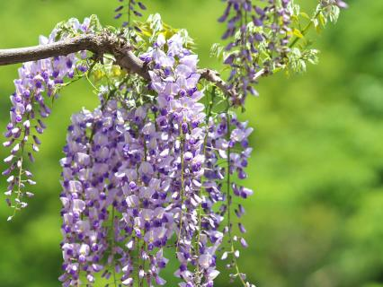

Types of Animals/Plants
TYPE OF ANIMALS -
Scroll down and check out all of the amazing animals you'll miss out on to see in person if you still haven't visited our zoo.

Ara
Ara ararauna (blue-and-yellow macaws) can be found all through subtropical and tropical timberlands, forests, and savannas in South America.The life length of blue-and-yellow macaws in the wild can be as long as 50 years while their rearing age goes from 30 to 35 years. They're classified as home pets at some countries.

Chimpanzee
Chimpanzee are types of apes that are most firmly identified with people. Chimpanzees occupy tropical timberlands and savannas of central Africa from Senegal in the west to Lake Albert and northwestern Tanzania in the east. Males are bigger & stronger than females.
Raccoon
Raccoons are medium sized creatures that are around 2-3 feet in length. Their bodies are stocky, round and shrouded in salt-and-pepper shaded hide. Raccoons are known best for the "dark cover" of hide around their eyes, otherwise called a "criminal veil," and dark rings around their hairy tails.
Giraffe
Giraffes are the world's tallest warm blooded creatures. They are remarkably adjusted to arrive at vegetation unavailable to other herbivores.Their "horns" are really handles covered with skin and hair over the eyes that shield the head from injury.Giraffes only need to drink once every few days.
Elephant
Elephants are the largest living animals on land, they have the biggest brains in the animal kingdom and form close, long-lasting social bonds. Even though Asian elephants are smaller than their African cousins, they still get up to 7-12 feet tall and weigh between 6,600 and 11,000 pounds.
Tiger
Tigers are earthbound warm blooded creatures that bunches the five types of huge felines: lions, panthers, panthers, snow panthers, and tigers. They are effectively conspicuous by their one of a kind dark striped example on a dull orange coat and in light of the fact that they are the biggest types of the Felidae family.
Ibis
Ibises are enormous wading birds with football-formed bodies. They have long legs and a long neck that they hold out straight in flight. Their bill is long and curved. Larger than a Cattle Egret, more modest than a Great Egret in size. In flight, they form diagonal lines or V-formations during flight.
Lemurs
Lemurs are a type of prosimian, which means they are primates that evolved before monkeys and apes. They are more primitive than their cousins but share certain characteristics. They are considered the world’s most endangered group of mammals.
Panda
The giant panda, a black-and-white bear, has a body typical of bears. It has black fur on its ears, eye patches, muzzle, legs, and shoulders. The rest of the animal's coat is white. Although scientists do not know why these unusual bears are black and white, some speculate that the bold coloring provides effective camouflage.
TYPE OF PLANTS-
Scroll down and check out all of the amazing plants you'll miss out on to see in person if you still haven't visited our zoo.
| Name | Image | Most Prominent Feature | Benefits | Features |
|---|---|---|---|---|
| CACTUSES | The needles are perhaps the most known feature that characterizes a cactus as one. | 1. It's an antiviral 2. It protects nerve cells 3. It can regulate blood sugar levels 4. It may reduce cholesterol |
1. Succulent adapted to dry, desert-like conditions 2. A specialized waxy, ribbed surface that covers the exterior of many cacti. 3. cactus species have SPINES that protect the plant and minimize surface area for water loss 4. Cactus flowers are short-lived and provide the primary characteristics that separate cacti from other succulents. |
|
| SEA LAVENDER | Its tall, lean stems regularly have ruddy tinge and develop 6 to 24 inches tall. | 1. Has been utilized for centuries as a mending ocean vegetable, included in soups and broths for its bracing and reinforcing properties. 2. Has created resistance to lack of hydration. 3. Known to be wealthy in polyphenols; antioxidants agents that secure against free-radicals. 4. Can offer assistance promote skin assurance, anticipating skin harm closely related with signs of maturing, like fine lines and wrinkles since used in cosmetic products. |
1. A blossoming plant found within the tall salt swamp and for the most part develops in affiliation with salt roughage grass. 2. A lasting and remains for a long time once it gets to be established. 3. It's branches deliver little, fragrant, pale purple blossoms along one side. 4. The sheath causes the bloom to seem on the other hand and gently orchestrated. |
|
| JAPANESE WISTERIA |  | Known for being tough and long-living, Wisteria climbs exceptionally tall, twining around supporting structures. | 1. It has awesome fancy appeal, could be a tough vine with dull, gleaming clears out and clusters of hanging sprouts that draw in butterflies, bees, and other pollinators in mid-to-late spring. 2. May be an energetic producer. This energetic grower climbs up any durable structure, picking up lengths of 30 feet (9m). 3. Is simple to proliferate from cuttings. Once built up, wisteria could be a long-lived plant that will give magnificence to the plant for numerous a long time. 4. May be a nitrogen-fixing plant, in this way moving forward soil quality. |
1. The plant’s pea-like blooms develop in pendulous clusters and blossom in white and shades of pink, blue and purple. 2. The vines have dull green pinnate takes off of nine to 15 leaflets. 3. The plant’s seed could be a level green pod that shows up after blossoms blossom amid the spring and summer. 4. Climbs exceptionally tall, twining around supporting structures. |
| VENUS FLYTRAP |  |
The leaves open wide and on them are brief, solid hairs called trigger or touchy hairs. When anything touches these hairs sufficient to twist them, the two projections of the takes-off snap closed catching anything is interior. | 1. Contains a compound called plumbagin that supporters claim benefits in cancer and numerous persistent sicknesses. |
1. When the mouth is closed, it is fixed air tight. That helps keep out microbes. 2. It is evaluated that these plants can live up to 20 years or longer. 3. Tangible hairs, called trichomes, on the interior of the petals basically monitor the movements from the insects around the plant. |
| CACAO TREES | The tree produces cases that contain almost 40 cocoa beans encompassed by a sweet tasting mash. | 1. When fermented and processed, the beans produce one of the most desired flavours in the world – chocolate. 2. These supplements from the beans on the tree that have been appeared to assist lower blood weight, progress bloodstream to the brain and heart, and help in avoiding blood clots. |
1. Cocoa seedlings have a single primary stem that develops vertically to a stature of 1-2 m. 2. Flowers emerge from pads within the wood of the most stem and fan branches once they are at slightest two to three a long time ancient. 3. Cocoa features a natural product diminishing instrument where the youthful natural product (cherelles) stop developing, turn dark and wither, but don't drop off the tree. |